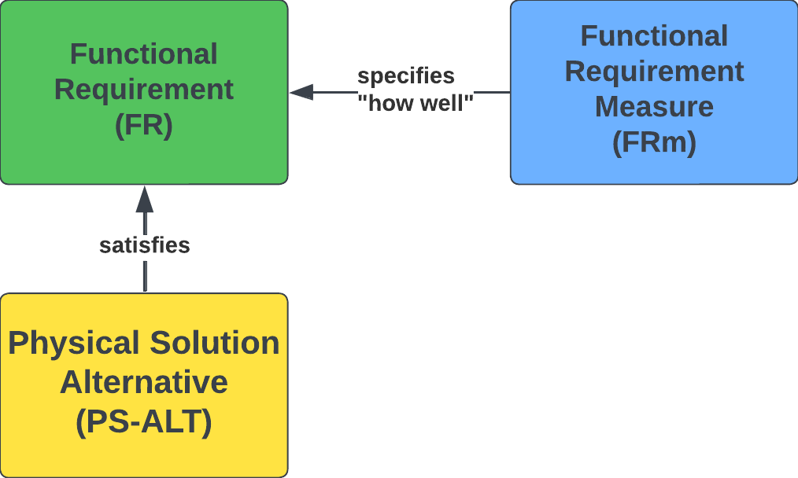
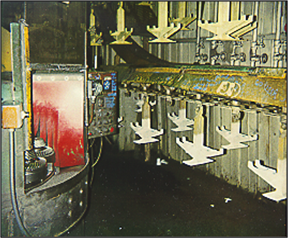

Project Systems Engineering
Lecture Notes 2026
Prof. Erwin Rauch and Prof. David Cochran

12 Step Design Process Primer
A guide to understanding and applying the 12 Step Collective System Design Process.
Use this primer alongside the 12 Step Template in Lucid.
Prof. David S. Cochran, Ph.D.
Joseph J. Smith
Version 0.1 · 2026-04-28
Introduction
The 12 Steps
Why FRs?

- Provides one method for transforming an idea or problem into a build-able, testable, and improvable design.
- Provides a Systems Engineering (SE) Lifecycle approach that includes the best methods for design (e.g., Axiomatic Design, Use Cases, System Boundary, FMEA, DFX techniques).
- Provides a common language (the System Design Language) to ensure consistency in how designers describe the problem and solution domains.
- Recognizes that design is NOT linear — 12-Step Collective System Design requires re-design as you learn more.
Work: Implemented with Standard Work.
Structure: Defines the operation of the system.
Thinking: Establishes the logical design of the system.
Tone: Perspective — a team consciously establishes and evaluates its attitude, mindset, and spirit toward problem solving.

Source: Cochran, D. S. (2010). "Enterprise Engineering, Creating Sustainable Systems with Collective System Design – Part II," The Journal of Reliability, Maintainability, Supportability in Systems Engineering, Spring Journal. pp. 16–21.
- Poorly designed systems fail people — people are NOT the cause of system failures.
- The goal is collective agreement on the design — not a "perfect" design in your eyes.
- A well-functioning team comes first; only then can you reach a buildable, testable, and improvable solution.
- All four aspects of a system must work together.
As a Professional Engineer, I dedicate my professional knowledge to the advancement and betterment of public health, safety, and welfare.
I pledge:
- To give the utmost of performance;
- To participate in none but honest enterprise;
- To live and work according to the highest standards of professional conduct;
- To place service before profit, the honor and standing of my profession before personal advantage, and the public welfare above all other considerations.
In humility, I make this pledge.
Source: Engineers' Creed. National Society of Professional Engineers. Retrieved July 24, 2025, from nspe.org/career-growth/ethics/more-ethics-resources/engineers-creed
Note the phrase: "In humility, I make this pledge."
Having humility as an engineer means:
- Recognize that you do not have all of the answers.
- Freely admit when you do not know something and search for an answer. Ask questions!
- Recognize that someone else knows more than you about solving the problem — you could learn a lot from them.
- Embrace failure as a wonderful opportunity to learn something that you did not know.
Collective System Design — Diagnosis to Design Process

- CSD is not a single technique — it's a synthesis of multiple disciplines, each contributing a viewpoint.
- 42010 is the meta-framework: it tells us a system needs multiple viewpoints to be fully understood.
- Every Step in this deck draws on one or more of these blocks — e.g., Step 4 leans on Axiomatic Design; Step 5 on FMEA; Steps 8–9 on V&V; Step 11 on the Toyota Production System.
ISO/IEC/IEEE 42010 is the international standard for architecture description of systems and software. It introduced the foundational idea that a complex system cannot be understood from a single perspective — instead, the system is described through multiple viewpoints, each capturing the concerns of a specific stakeholder.
An architecture description per the standard consists of:
- Stakeholders — the people with interests in the system.
- Concerns — what each stakeholder cares about (cost, safety, maintainability, performance, lifecycle).
- Viewpoints — the conventions used to construct a particular kind of view.
- Views — the actual representation of the system from a specific viewpoint.

Source: ISO/IEC/IEEE 42010 — Figure A.1, Conceptual model of an architecture description.
Published in 2011 as the first jointly-issued ISO/IEC/IEEE standard, 42010 unified two earlier documents (IEEE 1471:2000 and ISO/IEC 42010:2007) into one architecture-description framework. It established the vocabulary the systems-engineering community still uses today.
- System-of-interest — the entity whose architecture is being described.
- Stakeholder — an individual / team / organization with an interest in the system.
- Concern — what a stakeholder cares about (cost, safety, performance, lifecycle).
- Architecture viewpoint — conventions for constructing one kind of view.
- Architecture view — the actual representation built from a viewpoint.
- Architecture model — one component inside a view (a diagram, a table).
- Correspondence rule — a stated relationship between elements across views.

Source: ISO/IEC/IEEE 42010-2011 — Conceptual model of an architecture description.
MBSE is the formalized application of modeling to support system requirements, design, analysis, verification, and validation throughout the lifecycle. It replaces the document-centric tradition (Word + Excel + Visio handoffs) with an integrated model as the authoritative source of truth.
- Consistency — one source of truth eliminates document-sync drift.
- Traceability — FRs ↔ PSs ↔ verification cases linked in the model itself.
- Analyzability — models can be queried and simulated; documents cannot.
- Communication — views generated from one model speak the same language across teams.


We fail because we try to pour fresh water (the new system) into the old system (salt water) — and we're left with salt water.
We have to build a container — a term coined by David Kantor and William Isaacs in their work on dialogue — to hold the new system design.
The old system is the one driven by unit cost of an operation instead of achieving the functions of the system well.
- The collective agreement of an FR is the foundation of system change — if the team can't name the FR, they can't achieve it.
- The challenge to implementing systems change within an organization is building a team comfortable working together without fear of negatively impacting their careers — Kantor and Isaacs call this a "container" at the most fundamental level.
- Without the container, the new methodology (fresh water) gets diluted by the existing culture (salt water). Without the FRs, the design degrades.
| Information Architecture | |
|---|---|
| Term | Definition |
| Collective System Design Language | A language that consists of predefined classes and relationships to classify and relate information relative to a design. |
| Information Model (Meta Model) | A graphical representation of the classes of information and the relationships between the classes that form a System Design Language. |
| Information "Class" | A category or type of information. For example: Need, Functional Requirement, Physical Solution, Failure Mode. |
| Information "Relationship" | A defined connection between two classes of information. The connection implies that one class has an impact or interaction with the other. Relationships are bidirectional and can be read in either direction (e.g., X "elaborates" Y, Y is "elaborated by" X). |


| FR — FRm — PS-ALT | ||
|---|---|---|
| Term | Abbr. | Definition |
| Functional Requirement | FR | "What" must be achieved. An FR represents a required function of the product / system / service. |
| Functional Requirement Measure | FRm | A performance measure that defines "how well" an FR is achieved. Each FRm includes a Threshold (acceptable performance) and a Goal (desired ultimate performance). |
| Physical Solution Alternative | PS-ALT | "How" the design (product / system / service) will achieve a stated FR. |

The diagram below shows how a design relationship is formatted for use in a design decomposition — the FR and its FRm (with threshold) are stacked together, and the PS-ALT(s) that satisfy the FR sit beneath.

| Use Case — Use Case Step — FR | ||
|---|---|---|
| Term | Abbr. | Definition |
| Use Case | UC | A scenario for which the design in question will be used. |
| Use Case Step | UC.ST | A step (task / function) performed during a Use Case. The steps the customer and system take together to achieve the desired outcome. |
| Functional Requirement | FR | "What" must be achieved — a required function of the product / system / service. |

“We don't know the functions if we don't know how we're going to use the product or service.”
| PS-ALT — Failure Mode — Failure Cause — Mitigation | ||
|---|---|---|
| Term | Abbr. | Definition |
| Failure Mode | FM | A way in which the design or process could fail. |
| Failure Cause | FC | The cause of a particular Failure Mode. |
| Mitigation | M | The means to prevent a Failure Cause (prevention), or to reduce the impact of a Failure Mode (detection). |

“The Designer's Selection of a Physical Solution Introduces Failure.”

| List of Questions | |||||
|---|---|---|---|---|---|
| Question | Who should answer the question? | From Step | Answer | Name + Email of the person who provided the answer OR Cited Reference | Date Answered |
| How much is the customer willing to spend? | Potential customer(s) | 1.6 | $85 | Sarah Smith — SSmith@loa.com | 2026-04-12 |
| What type of fittings are standard to residential faucet installations? | Design Team | 2.6 – 2.7 | 3/8" compression on faucet, 1/2" female NPT on supply | Luxuryhome. (2024, October 29). Understanding Faucet Supply Line Sizes: Essential Guide. Luxuryhome Faucet Manufacturer. https://www.luxuryhomefaucet.com/faucet-supply-line-sizes/ | 2026-04-15 |
- Ask questions without fear — the only bad question is one that is not asked.
- Always write down the name of the person who answered, the answer given, and the date — the log is the audit trail behind every design decision.
- The parking lot is tracking what you know (or your ideas) about the design, but you may be unsure where to document the information right now. Brainstorm and generate as many ideas as possible — and classify them according to the information class in the Parking Lot.
- Remove information from the parking lot once it finds its home in the design. The parking lot is tracking what has not yet been incorporated into the design.


- Step 1 starts with people: capture name, background, and role for every team member.
- Roles establish ownership early — each FR group will trace back to a Lead.
- Leave the open row available; teams grow as scope expands.
- The Project Description clarifies in one or two sentences the problem that the project solves.
- Lock in cadence with both advisors and the sponsor/customer at the start; recurring meetings keep the project from drifting.
- Capture the sponsor's named point of contact and email — ambiguity here causes scope and approval delays.
- Question every requirement — especially the ones that look obvious. A stated "requirement" is often a hidden PS-ALT (a solution someone already has in mind). Keep asking "why?" until you reach the underlying function (the FR). The strongest designs come from challenging given requirements, not accepting them.
- Customer "requirements" usually mix several classes of information — Needs, FRs, FRms, and PS-ALTs — sort each one before you act on it.
- Refer to the glossary at the beginning of this document to better understand the CLASSES of information.
- The Modified-on column is essential — requirements evolve as you talk to advisors and the customer.
- As designers, we want to achieve a market-acceptable cost AND the design FRs without compromise.
- This trade-off is the engineer's / system designer's central challenge — cost discipline cannot come at the expense of FRs.
- Two valid framings: market price (consumer goods) or a fixed client budget (custom builds). Pick whichever applies to your project.
- Standards are unique to the problem you are solving and the solution you are designing.
- Your design choices will impact which standards ultimately apply — e.g., wireless communication vs. hard-wired changes the regulatory picture.
- Capture the link to each standard up front so the team can verify exact requirements during Verification (Step 8).
- List safety concerns first — the failure modes the design must prevent — before listing the responsibilities the design must uphold.
- Each concern should map to one or more responsibilities in the design.
- Safety considerations identified in Step 1.7 feed Step 5 (Design & Process FMEA) and Step 8 (Verification Test Plan).
- The "-ilities" force you to think about the full lifecycle — not just the working product, but how it is built, used, maintained, and retired.
- Different problems weight the "-ilities" differently. Identify the dominant ones for your project early.
- Each relevant "-ility" should later trace to one or more FRs in the Decomposition (Step 4).
| 2.0 — Problem Statement | |
|---|---|
| Step 2.0 — What is the main problem you are solving? | Who has this problem? |
| (Try to keep the problem statement concise — 1–2 sentences.) | |

- The Problem Statement describes the purpose of the project in 1–2 sentences. If the problem statement is not brief, the problem is not understood.
- FR0 is the single top-level functional requirement — everything else in the design decomposes from it.
- FRm0 is the measurable form of FR0 (there can be more than one FRm0) — the metric(s) you'll use in Verification (Step 8) to confirm the solution achieves the main function.

A Use Case is a scenario or task a customer performs with your product / system / service. Different Use Cases impose different FRs.
The Use Case list should be exhaustive — capture every scenario up front to avoid requirements creep.
Toaster: toast bread · toast a bagel · store when not in use · clean the toaster.
Car: grocery trip · road trip with luggage · pull a trailer · routine maintenance.
| Use Cases |
|---|
| Step 2.3 — Use Cases to Support |
| Wash hands in sink |
| Wash dishes due to medical procedure |
| Drink water from sink |
| Install water filtering system |
- Use Cases drive Functional Requirements — capture them exhaustively before locking down FRs.
- Engaging customers and additional research helps surface Use Cases the team may not see on its own. The designer ultimately decides which Use Cases the design will support.
- Plan for unintended Use Cases too — they create new safety considerations and may add or revise FRs.
- FRs start with a verb + direct object (e.g., Adjust temperature).
- Don't embed a solution (e.g., Use Titanium, Turn knob).
- Don't include a measure of performance ("how well") — that belongs in the FRm.
- Don't use "AND" — usually a sign of two separate FRs.
- The Value Proposition is per Use Case, not for the product as a whole — different Use Cases can highlight different value.
- Stating value as A + B + C forces clarity on what each component contributes; vague language hides weak value.
- Example — for a toaster, the designer would explain how the new toaster out-performs others at toasting bread, toasting a bagel, storage, and cleaning.
A Use Case Flow describes how the product (or service) is used — or experienced — by the customer for each Use Case, as a series of steps.
A Use Case Flow diagram should include the steps (Functions) that the user performs in addition to the steps (Functions) that the system / solution must perform.

- Capture both user-performed steps and system-performed steps — the boundary between user and system is what defines the design's interface requirements.
- Each Use Case (from Step 2.3) should have its own Use Case Flow.
- The Functions surfaced in the Flow feed directly into the Functional Requirements (FRs) used in the Decomposition (Step 4).
For example, with a toaster, think about how to describe the use of the toaster to someone who has never used one before. Be sure to explain to the user what their tasks are in addition to what the toaster will do in response.

- Use Case steps are described from the viewpoint of the customer and detail what the customer wants/needs the system to do, step-by-step.
- Each Use Case should be represented with a unique Use Case Flow diagram.
- Review or simulate the Use Case Flow with the customer to ensure you are delivering the desired experience.
- The more rigor the designer applies to capturing Use Case steps, the more the team truly understands the Functional Requirements needed to deliver the desired user experience.
A System Boundary diagram captures all elements required for the system to function. The designer decides which elements live inside the boundary and which stay outside; arrows crossing the boundary represent inputs (into the system) and outputs (from the system). For every external element, the designer must define a working interface.

- The designer chooses what is inside vs. outside the boundary.
- Every external element needs a working interface.
- Arrows in → inputs; arrows out → outputs.

- Interfaces should map directly to the System Boundary diagram — one row per crossing.
- There can be a 1-to-many relationship: each interface may have several failure modes.
- Common causes: incompatible materials, dimensions, fittings, threads; insufficient strength or current capacity; incompatible voltages (high/low, AC/DC, phase, frequency).
- Mechanical interfaces are also points of friction — failures may not show up until many cycles in.

- Begin with humility — existing solutions reveal proven approaches and the deficiencies you can target.
- Step 3 is iterative — if 3.3 surfaces a weakness, loop back to 3.2 and add another concept.
- The selected CDA from 3.4 becomes PS0 — the parent solution decomposed in Step 4.
- Existing solutions reveal proven approaches and the deficiencies you can target.
- Three solutions is a starting point — add more Existing Solutions if the breadth and depth of the design space isn't covered.
- The "why differently" answer becomes part of your value proposition (Step 2.4).

- Generating multiple alternatives forces the team to consider different approaches rather than defaulting to the first idea.
- Detail comes later (Step 4 onward); at this stage, the goal is breadth of thinking.
- Every concept must answer to something already documented — no FRs needed yet (those come in Step 4).
- This matrix (or table) forces traceability and surfaces the weakest concept before Step 3.4 selection.
- Empty cells are not failures — they're questions to log in the List of Questions and resolve before selection.


- Copy FR0 & FRm0 from Step 2; copy PS0 from Step 3.4.
- List FRs the parent PS must deliver — consider its SBFIL: Structure, Behavior, Footprint, Interface, Lifecycle.
- For each FR, write FRm(s) — Threshold (acceptable) and Goal (desired ultimate).
- For each FR, list candidate PSs (PSa, PSb, PSc…).
- Coupling check — Does picking PS for FR1 affect the achievement of FR2? Decouple before deciding.
- Choose the best PS for each FR via decision analysis.
For each child PS, repeat 2 Decompose to drop down another level. Stop when the PS is atomic — you know enough to buy or build it.
Every chosen PS claims it will achieve its FR (to the FRm threshold). Back the claim with prototypes, simulations, cited research, data sheets, or models. Without evidence, the claim is a guess.

One parent PS spawns child FRs. Each child uses the same shape: PS satisfies FRm / FR.
… and so on for FR3, FR4, … Then run the algorithm again on each chosen PS.
- The CSD Algorithm repeats — the chosen child PS becomes the next parent PS of the next-lower-level FRs (minimum 2 FRs) and runs through 2 Decompose again.
- A level isn't done until every child has FR + FRm + Threshold + PS; anything missing means the level is incomplete.
- Run the coupling check before decision analysis to choose PS — decoupling is what makes the rest of the process work.


The previous two examples both produced full off-diagonal entries in the design matrix — but for genuinely different reasons. Naming the difference helps you spot coupling earlier and choose the right fix.
The PSs cannot, by the nature of the chosen mechanism, target a single FR. The coupling is visible from the design spec itself — no implementation needed to see it.
Recall the faucet: each valve is a “restriction on a flow path.” By construction, turning either valve changes both flow rate and mix temperature — the spec already shows two FRs running through one knob.

The PSs are intended as single-FR controls, but implementation physics introduces unintended cross-effects that only appear once the system is built or analyzed.
Recall the barn beam: two beams designed to carry two independent loads — until the welded implementation creates a shared structural response. The coupling appears only after the build choice.

- Inherent coupling can be caught at the spec stage — the design matrix flags it before any prototype. Fix by re-choosing the mechanism.
- Emergent coupling is what the design matrix is genuinely built to discover — physics or geometry introduces an off-diagonal that the abstract decomposition didn’t anticipate.
-
1
Incorrect FR wording: An FR begins with a verb — an action or transformation.
-
2
Incorrect PS wording: A PS begins with a noun — something observable / quantifiable that achieves an FR.
-
3
Unacceptable cases: Check for coupled, incomplete, redundant, not process-capable within a branch before the next level.
-
4
Inadequate branching: A design only decomposes if two or more FRs expand on the preceding PS.
-
5
PS → FR across levels: Relationship arrows must not cross levels.
-
6
PS → FR across branches: PS-to-FR only within the same branch, same level.
-
7
Incorrect arrow: Arrows = PS → FR within branch + level. Lines (no head) = PS decomposed into child FRs.


| Part | FR — what it does | PS — candidate solutions |
|---|---|---|
| Fan | FR1.1: Move air across the heat sink | Axial fan · centrifugal fan · liquid pump |
| Heat Sink | FR1.2: Conduct heat from CPU surface to airflow | Aluminum finned · copper finned · vapor chamber |
| Thermal Paste | FR1.3: Bridge the CPU↔heat-sink thermal interface | Silicone paste · phase-change pad · liquid metal |
| Wires | FR1.4: Carry power to the fan | Twisted-pair AWG18 · ribbon cable |
| Connectors | FR1.5: Connect fan to motherboard / power | JST 3-pin · 4-pin PWM header |
| Fasteners | FR1.6: Secure cooling system to motherboard / chassis | Spring-loaded screws · push-pin clips · backplate |
| Temp Sensor | FR1.7: Sense CPU / fan temperature | Thermistor · on-die DTS · thermocouple |

| 5 — Excellent | User completes all tasks quickly, no training needed. |
| 4 — Good | Tasks completed; brief moments of hesitation. |
| 3 — Acceptable | Tasks completed with manual / one nudge. |
| 2 — Poor | Tasks attempted; user gives up on at least one. |
| 1 — Failing | User cannot complete the task. |
- Score on a 0–5 scale: 0 = unacceptable (below threshold — auto-rejects the alternative); 1–4 = inside the trade space (between threshold and goal); 5 = meets or exceeds the Goal.

- FMEA is predictive — it surfaces failure modes before they occur in the field.
- Each Failure Mode and its Mitigation may add new FRs and PSs to the design that must be included to manage the identified risk.
- DFMEA and PFMEA together cover both design-introduced and process-introduced failures.
- Loop-back trigger: if FMEA surfaces a Mitigation that adds a new FR, loop back to Step 4 and decompose it into the design.

- The PS-ALT chosen introduces the Failure Mode — failures are not pre-existing properties of the FR; they appear with the choice of physical solution.
- The class diagram on the right is an excerpt from the Information Model, specific to FMEA — it shows the same FR / FRm / PS-ALT relationships, with Failure Mode / Failure Cause / Mitigation added.
- Designs fail because the PS-ALT does not achieve the intended FR or exhibits undesirable behavior in the process.
- Risk identification and mitigation needs to be considered during the design approach.
- Risk mitigation can be employed for both the design (Design FMEA) and the process (Process FMEA) to manufacture the design.
- Score by team consensus — if any team member's score differs by more than 2 points, document each rationale in the FMEA Notes column before settling on a final score.
- Notice that the Failure Severity does not change between the DFMEA and PFMEA case — the failure is the failure. What changes is where it's caused (in the design vs. in the manufacturing process).
- DFMEA targets failures introduced by the chosen physical solution; PFMEA targets failures introduced by the process that produces the design.
- What are all the parts of the system?
- How do the parts fit together (and perform FR0)?
Detailed Design translates the Logical Design (Decomposition) into the Physical Architecture.
Derive Physical Architecture Components from the Decomposition; capture as a Bill of Material (BOM). Components come from your PSs — one PS may yield multiple components.
Example: a "toolbox" PS may include a socket wrench, 10/12 mm sockets, flat-head screwdriver, etc.

| Component | Spec | Qty | Ord? | Recv? |
|---|---|---|---|---|
| Supply Connections | 3/8" comp. on faucet, 1/2" female NPT on supply | 2 | 2 | Yes |
| Power Supply | 110 VAC in, 12 VDC out, >200 W | 1 | 1 | No |
- Detailed Design translates Logical Design (Decomposition) into Physical Architecture.
- Step 6.1 — Components are derived from the PSs and captured in a Bill of Material (BOM).
- One PS may yield multiple components depending on level of decomposition.
Determine what diagrams/methods are appropriate to communicate your design. Use these diagrams/methods to arrange the BOM components to communicate the physical architecture — i.e., how do these components fit together to implement the PSs to achieve the FRs?


- Pick diagrams/methods that effectively communicate how the components fit together.
- Goal: show how components implement the PSs to achieve the FRs.
- Step 7 refines the detailed design from Step 6 — it doesn't replace it.
- Apply only the DFX methods that fit your project context — not every method applies to every design.
- The DFX lens you skip becomes the design risk you carry forward.
- DFA refines an existing design to reduce complications and cost during assembly.
- Goal: fewer parts and interfaces → fewer assembly steps, lower cost, simpler BOM.
- Three reasons to keep a part separate: relative motion, different material, or required service access.
- DFM addresses complexity that drives quality issues, cost, and lead time during manufacturing.
- Five categories to evaluate: Material, Process, Design, Environment, and Compliance/Testing.
- The questions force explicit decisions about material, process, and design — informing the manufacturing strategy.
Assess the potential quality of a part to be made using an Additive Manufacturing (AM) process by giving intuitive feedback and indirectly suggesting changes to improve the design.

Worksheet figure available in Lucid Chart for full readability. Source: Booth, Alperovich, Reid, & Ramani (2016). DETC2016-60407 [PDF]
- DFAM helps novice and intermittent AM users avoid common print and prototyping failures.
- Eight worksheet categories — mark one option per category, sum across rows for an overall score.
- Total score maps to a recommendation: needs redesign, consider redesign, moderate likelihood, or higher likelihood of success.
- Software Design is the DFX equivalent for software-bearing systems — a blueprint of structure, behavior, and interactions.
- Six principles guide the blueprint: Modularity, Separation of Concerns, Correctness, Efficiency, DRY, and Scalability.
- Each principle pushes a specific quality attribute — reliability, maintainability, performance, or scalability.
- Manufacturing System Design specifies the FRs (functional requirements) the production system must meet.
- The objective is to form a team to choose solutions that achieve all 7 FRs reliably first; then work to improve solutions to achieve the least cost without compromising the achievement of the FRs.
- Each FR drives a corresponding PS (physical solution) — the means by which the requirement is achieved.

Five sequential steps for reducing complexity and cost — popularized by Elon Musk. Order matters: do not skip ahead.
| # | Step | Description |
|---|---|---|
| 1 | Every requirement traces to a named owner | Every requirement must come from a named person responsible for the requirement — not a department (not "the legal department" or "the safety department"). Requirements from smart people are the most dangerous because they're less likely to be challenged. Make them less dumb. |
| 2 | Delete any part or process you can | You may have to add them back later. If you don't end up adding back at least 10%, you didn't delete enough. |
| 3 | Simplify and optimize | Only after Step 2 — a common mistake is to simplify or optimize something that shouldn't exist. |
| 4 | Accelerate cycle time | Every process can be sped up — but only after the first three steps. "I mistakenly spent a lot of time accelerating processes that I later realized should have been deleted." |
| 5 | Automate | Comes last. Don't automate before requirements have been questioned, parts/processes deleted, and bugs shaken out. |
Source: Isaacson, W. (2023). Elon Musk. Simon & Schuster.
- Order is critical — most cost-reduction failures come from automating or optimizing what shouldn't exist.
- Step 1 is people-driven: every requirement must trace to a named person who can be questioned.
- If you don't add back ∼10% of what you deleted in Step 2, you didn't delete enough.
- Verification answers two questions: Did we build it right? and Does it achieve the FRm's?
- Verification compares the system as built to its design specifications — not to user needs (that's Validation, Step 9).
- Each FRm gets a Verification Requirement, Event, Configuration, and Procedure.
- Loop-back trigger: if a verification test fails, loop back to Step 6 / 7 — and may also include Steps 2–5 — to revise the design choices that produced the failing PS.
- Each FRm traces to a Verification Requirement → Event → Configuration → Procedure.
- The Test Procedure is detailed enough that a different operator could repeat the test and reach the same results.
- The Test Configuration enumerates everything needed to run the test: hardware, fixtures, software, and people.
Key question: Does what we built do what the customer needs / wants?
Validation is the process of determining if the product / system / service meets the needs and wants of the customer.

Onkar Sonur
- Validation (Step 9) answers "Did we build the right thing?" — Verification (Step 8) answered "Did we build it right?"
- Validation is conducted with the customer/user, not by the engineering team alone.
- A "Yes" decision should be backed by a customer signature on the validation record.
- Loop-back trigger: if Validation reveals the customer's needs were misunderstood, loop back to Step 1 (and possibly Step 2 use cases) — refine the FRs/FRms and re-run the affected downstream steps.
- Build planning starts with what you don't know — the goal is to surface gaps in skills, tools, and help before the build begins.
- A realistic timeline budgets time for troubleshooting and revision, not just for the build itself — because stuff happens.
- Communicate early when the timeline is slipping — advisors, instructors, and clients can help recover, but only if they know.
- Standard Work represents the best way we know how to do the work right now.
- Standard Work is a record of all problems that have already been solved.
- Standard Work provides the foundation for improving the work methods — because we know how the work is done right now, we can make improvements to better achieve the desired outcomes.
- The same product needs multiple Standard Work documents — one for each Use Case (Installation, Operation, Maintenance, ...).
- The Key Point column captures the why — the failure mode that gets prevented by doing the step correctly.
- Standard Work is written from the customer's perspective: it must let a first-time user complete each Use Case without prior training.

- Step 12 is the execution wrap-up: run the verification + validation tests, then finalize the cost.
- 12.3 is the project's improvement backlog — future-state designs and any missed Use Cases get captured here.
- Two parallel cost paths — market-price (consumer goods) or client-budget (custom builds). Capture whichever applies.

| Action / Solution | Unconscious Thinking |
|---|---|
| High Speed Machines | "The more the better" — Unit Cost Equation |
| Outsource to Low-Wage Countries | Reduce Labor Cost |
| Automation | Absorb less overhead, reduce labor cost |
| ERP Systems | Computerization of existing inventory & accounting practices |
| AI in Higher Education | "Let's use the shiny new technology" |





 Electric motor automatically moves water. Same FR — better PS.
Electric motor automatically moves water. Same FR — better PS.

- FRs are constant.
- We as humans don't always know them.
- We have solutions that couple, are redundant, or are incomplete — and we "dance on the mess" by changing FRms instead of fixing the underlying design.
- Without recognizing path-dependency, people focus on reducing inventory as the PS for FR: "Become Lean" — when the real FRs are the 7 FRs of MSD, sequenced.